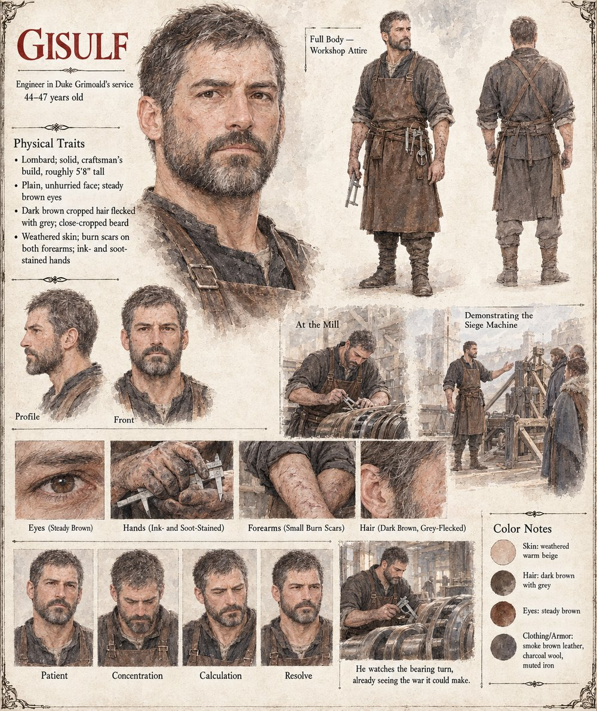

Gisulf
Engineer in Duke Grimoald's service · twice told him a design would fail, and was right both times
Grimoald's engineer, trusted for the rare reason that he has twice told the Duke a design would fail and been right both times. Sent to look at Verrasco's mill, report honestly, and touch nothing without permission, he touches nothing — and doesn't sleep for three nights afterward, which he considers, privately, sufficient permission of its own. His eleven-page report reaches one conclusion: a tolerance nothing in Trevano's armories can presently match.
He never reproduces the bearing itself; every imitation opened past a certain depth seizes and goes inert. What his workshop builds instead, failing patiently and expensively for two years, is the capability to measure and match precision from the outside — lathes, gauges, metalworkers trained to a standard no apprenticeship had previously required. Demonstrating a trebuchet joint machined to that standard, he's the one who finally says the sentence Grimoald spends three days pretending to deliberate over.
“A joint that fails less often, under less maintenance, through worse weather, is not a better mill part. It is a better war.”